Пробежки и велозаезды из «Здоровья»
Кардио из любого приложения появляется с картой маршрута, темпом и пульсовыми зонами.
Силовые тренировки на iPhone и Apple Watch
Записывай подходы за секунды, следи за каждым рекордом, а неделю тренировок доверь ИИ-тренеру. С Replex прогресс видно.
Начать можно бесплатно. Pro добавляет ИИ-тренера, собственные планы и всю историю.
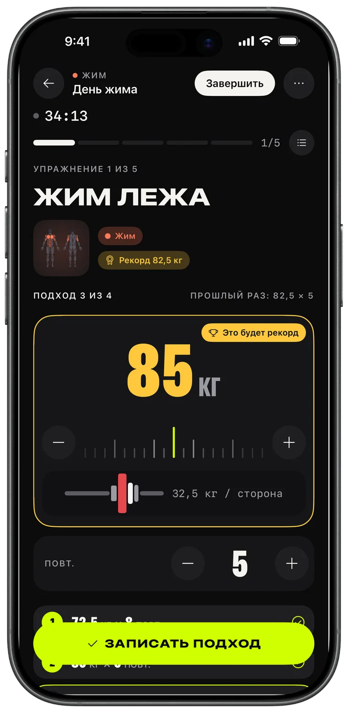
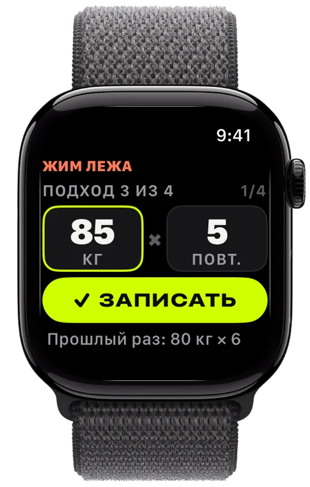
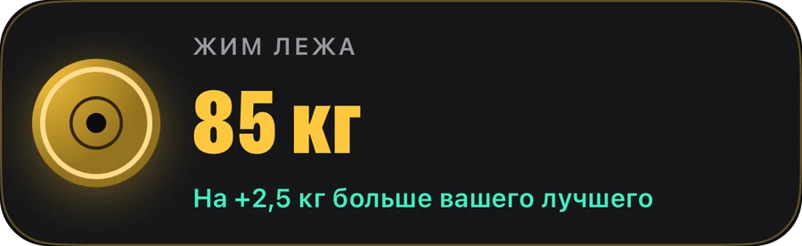
Запись
Набери блины, запиши подход, побей прошлый результат. Replex помнит, что ты поднимал, и готовит следующий подход раньше тебя.
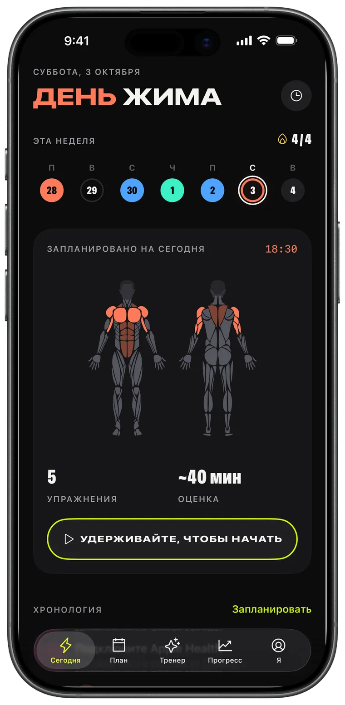
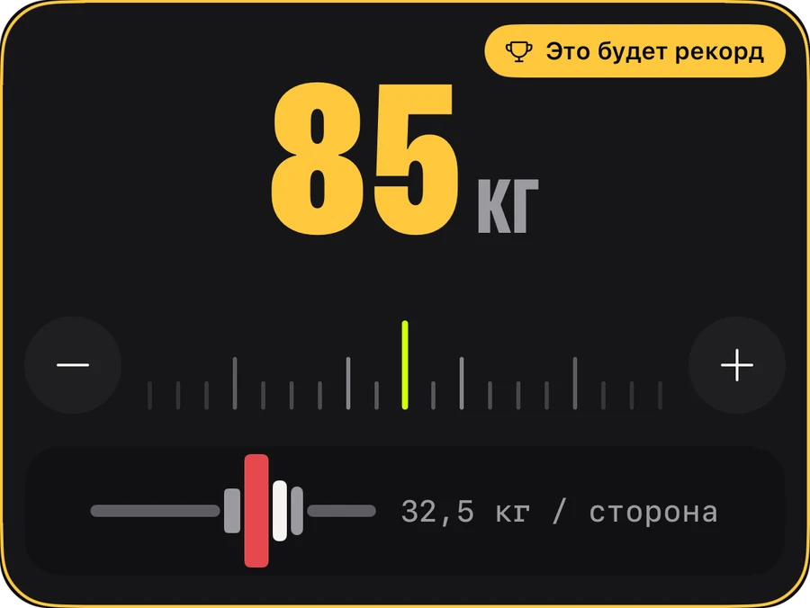
Apple Watch
Оставь телефон в сумке. Покрути колесико, чтобы задать вес и повторения, нажми «Записать» — и iPhone синхронизируется мгновенно.
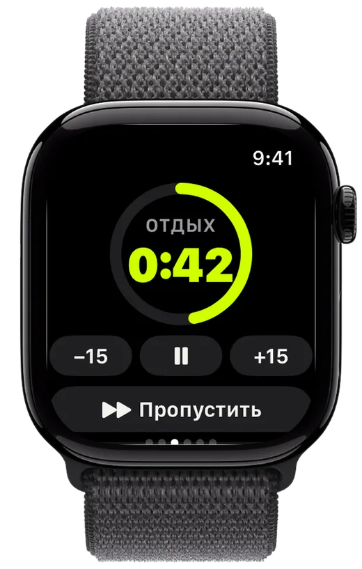
Прогресс
Объём, который растёт неделя за неделей, все твои рекорды и динамика каждого упражнения — видно, что работа окупается.
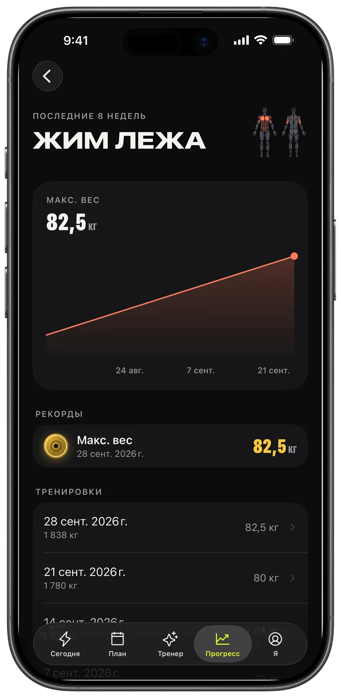
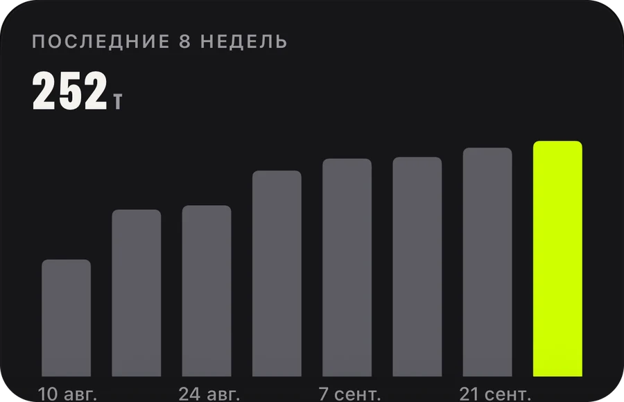
ИИ-тренер · Pro
Попроси неделю — и она уже в календаре. Тренер смотрит на твои реальные тренировки, рекорды и пробежки и планирует с их учётом.
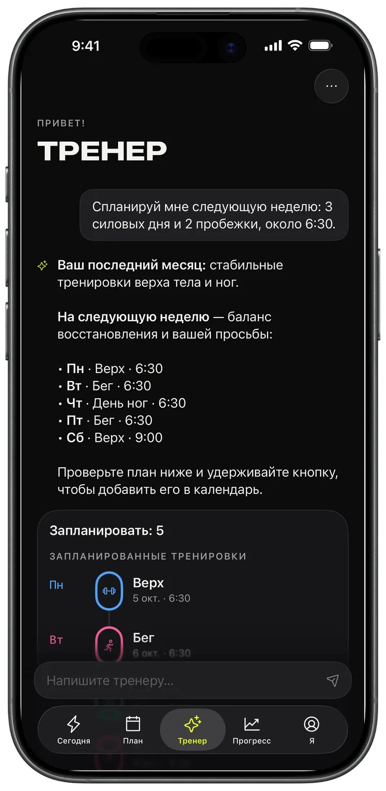
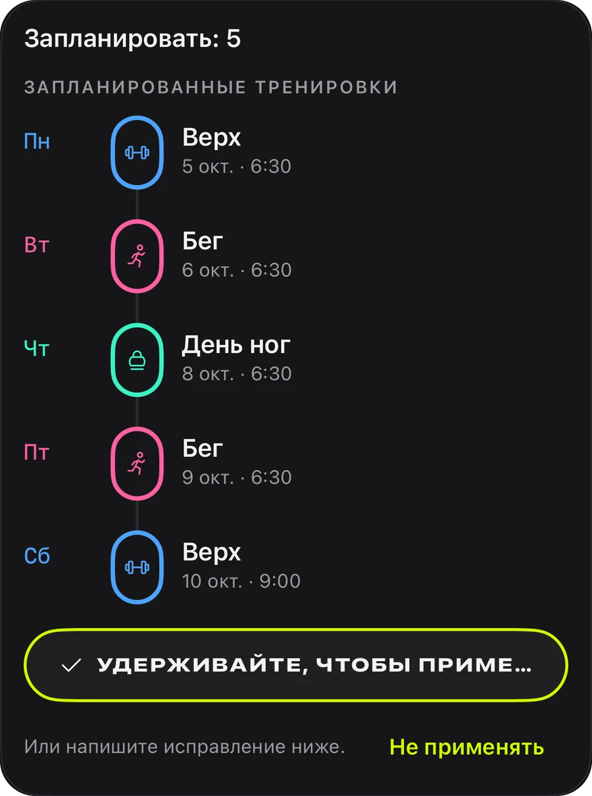
Планы
Жим, тяга, ноги, верх/низ, всё тело: 44 готовых плана, чтобы начать сегодня, или собери свой и поставь на повтор.
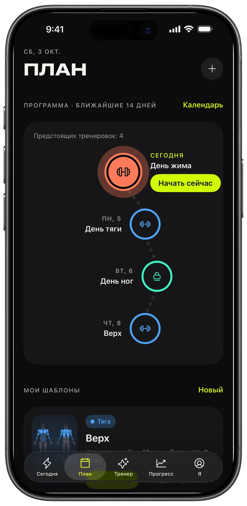
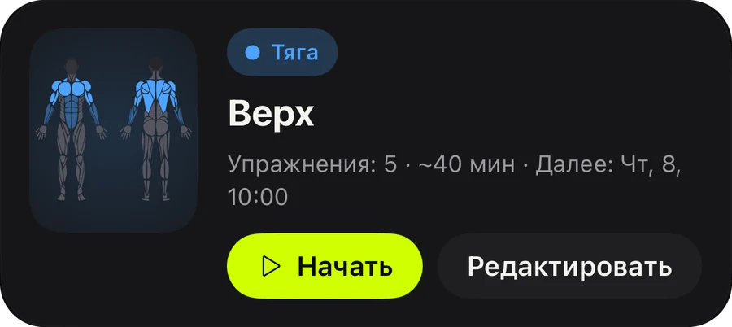
Поделиться
Каждая завершённая тренировка превращается в карточку для сторис с объёмом, временем и рекордами. Опубликуй её или сохрани как доказательство.
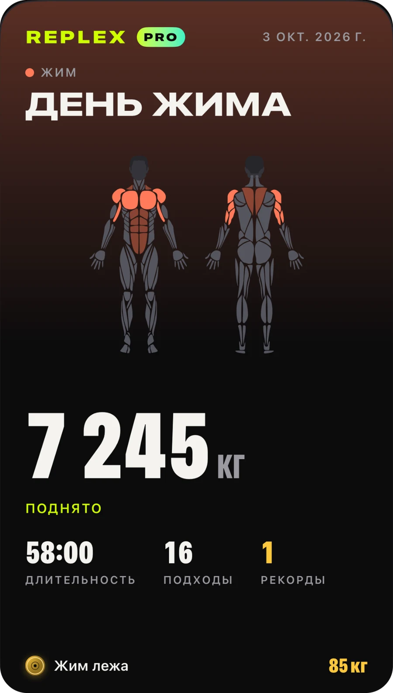
Кардио из любого приложения появляется с картой маршрута, темпом и пульсовыми зонами.
Текущий подход, отдых и пульс на экране блокировки и в Dynamic Island.
Тренировки, шаблоны и планы на всех твоих устройствах — и доступны только тебе.
Смотри, что прокачает тренировка, ещё до начала, и что ты уже нагрузил за неделю.
Килограммы, фунты или стоуны; упражнения с собственным весом и на время уже встроены.
Светлая или тёмная тема и три акцента — Volt, синий и розовый — с подходящими иконками приложения.
Всё, чтобы записывать тренировки и прогрессировать.
Для тех, кто планирует наперёд.
Pro доступен в приложении как месячная или годовая подписка или как разовая покупка навсегда. Подписку можно отменить в любой момент в настройках аккаунта Apple.
Скачай Replex и запиши первую тренировку меньше чем за минуту.
Нет. Replex полностью работает на iPhone. С Apple Watch можно записывать подходы, запускать таймер отдыха и следить за пульсом прямо с запястья.
Да. Пользоваться Replex можно бесплатно: запись тренировок, таймер отдыха, 5 планов с собственным весом, рекорды за последние тренировки и 5 тренировок на Apple Watch. Replex Pro — помесячно, на год или разовой покупкой навсегда — добавляет ИИ-тренера, все 44 плана, собственные шаблоны и расписание, полную историю и неограниченные тренировки на часах.
На твоих устройствах и в твоём личном iCloud. Тренировки также можно сохранять в «Здоровье». ИИ-тренер видит только то, что нужно для ответа, и только когда ты сам спрашиваешь.
Килограммы, фунты или стоуны — подбор блинов работает в выбранных единицах.
54, включая русский, украинский, английский, испанский, португальский, французский, немецкий, японский, корейский, китайский, арабский и иврит.